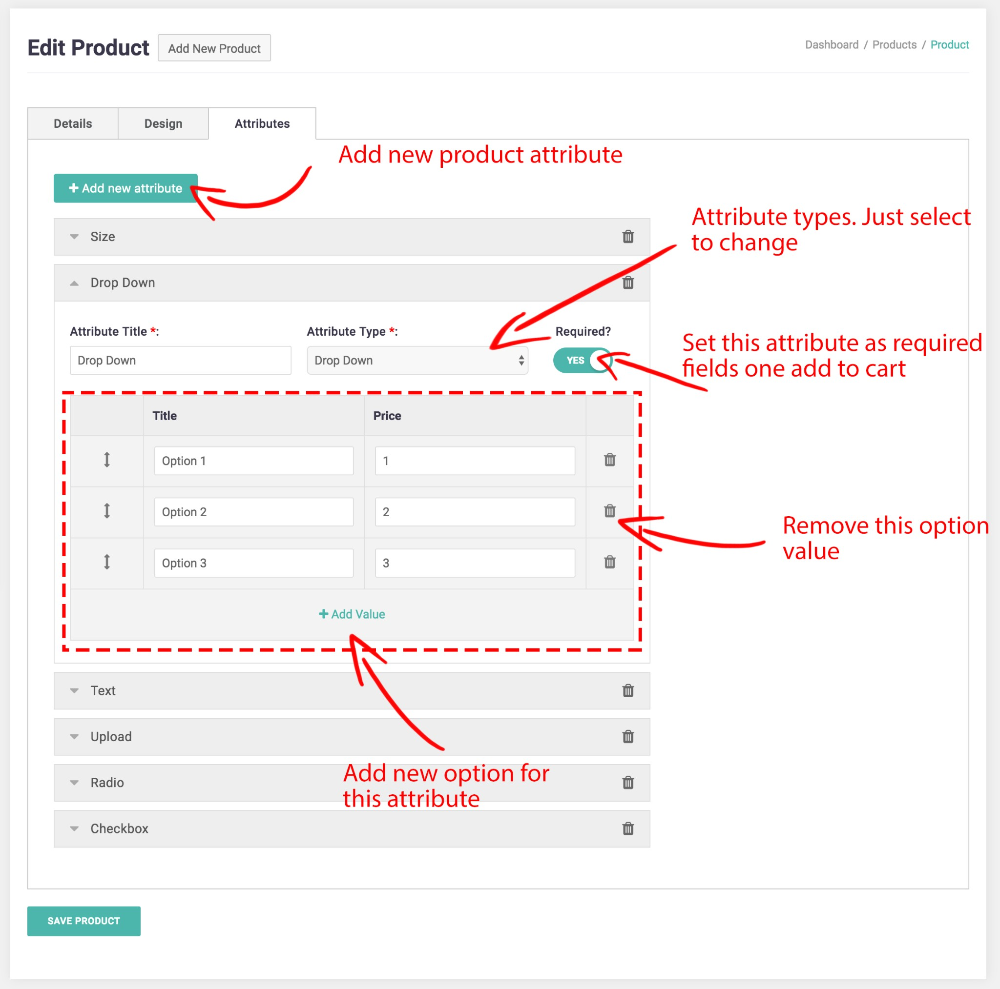

Lumise Introduction
Welcome to the Lumise Document, Thank you for using our product!
Lumise is the professional product designer tool, it has everything your customers need to design better from one easy to use online tool.
You can manage and guide your users by this document, or you can view the online version here https://docs.lumise.com.
Installation
To install Lumise, first check the requirements system below.
- PHP version 5.2.4 or greater. - MySQL version 5.0.15 or greater or any version of MariaDB. - (Optional) Apache mod_rewrite module (for clean URIs known as Permalinks)
Step #1
After purchase Lumise from Codecanyon, go to download item from My Account > Downloads Items. Select Lumise and download it.
Unzip package you downloaded from codecanyon website
Step #2
Upload files to your hosting
Step #3
To start install, type the installer URL of Lumise with structure : http://[your_domain]/[lumise_folder]/installer/
- [your_domain] replace it with your domain URL.
- [lumise_folder] the folder path your uploaded Lumise. If you uploaded to root folder, just leave it.
After that, follow instruction on the page to install.
You need to prepare the database info before installs such as hostname, database name, username, and password.
We noticed on the first screen of the installer.

Click on Let’s Go button to start to install.
Step #3.1
New page display with the required fields for database connection and folder paths.

- Upload path: The path of folders which all data files stored. Please ensure your path is readable for all users.
- Upload URL: The URL to the upload folder.
After filling your data, press the Submit button for verify connection and creating folders.
Step #3.2
If your connection does not have a problem, the installer will inform you about that and installer created the connector file to ready import sample data.

Step #3.3
After press import sample data. You can access your editor or admin panel with buttons in the panel.

Hope that will help finish setup in some minutes.
Management
This is Lumise's manage area. All data controled via one panel, help you access quickly and easy to use.

Product Base
Firstly, we must understand what is Product Base.
Product Base looks like as a design template which used by many similar products from CMS can use to allow user edit or selling directly this product with a template design.
To manage Product Base, just go to Admin panel > Product Base then you can see some menu here.
Firstly, the list of all products added.
{kind=link}
In this area, you can see the stages thumbnail of product, name, SKU and some filter options on the top as well.
You can customize the display of this screen’s contents in a number of ways.
Bulk Actions : You can also edit or remove multiple items at once. Select the items you want to act on using the checkboxes, then select the action you want to take from the Bulk Actions menu and click Action.
- Active : Show selected products on product list when assigning with CMS product.
- Deactive : Hide selected products on product list when assigning with CMS product.
- Delete : Remove selected products.
Add/Edit Product Base
To add a new item, just click on menu or button Add New Product Base. And select on of item in the list to edit that one.
You got screen bellow after that:
There are 3 tabs for each product:
- Details – Some details information for product
- Design – Config designs for each stage of product such as front, back, left, right
- Attributes – Config attributes of products to use for add to cart.
Details
There are many fields to put into a product.
- Name : The name of product which displays on the list
- Price : The base price for products. The total product of product will depend on price base, attributes prices, printing method selected.
- CMS Product ID: The main product CMS which assigned to this product base. Each product base must have one main product CMS, but multi CMS product can be assigned to a product base.
- Description: Short description of this product.
- Categories: Select one or more categories which product base belong to. Helpful on sorting items
- Printing Techniques: Printing methods which can apply for this product base.
- Active: Enable/Disable clipart on front-end.
Design
There are many options for a design of a product. The important is design area.
Lumise support drag and drop method for you can arrange area and size range as well.
- Allow Change Color
- No display product color: disable select product for product, it means product just have one color pre-selected
- Only choose from set of colors: User can change product colors, but they just can choose from set of colors
- Choose from set of color and color picker: It’s mean there is not limited to color for this products. The user can select from a set of colors or put their own via color picker.
- Set Product Colors : Choose and add colors for product
- Configure Stages : Setup design area and design base for each stage.
Notice: The great feature on this tab is assign pre templates for stages of the product. It is helpful in case you want to sell directly product or just set default template to edit for users can start customizing.
Attributes
Lumise support follows product attribute types:
- Size – the set of sizes attribute for a product. You can add any size you want
- Dropdown – a list of dropdown select items of attribute
- Text : The text box for user can set their notice when add to cart a product
- Upload : User can upload their notice via this type attribute
- Radio: Display list of option for one attribute on product
- Checkbox: Display list of options for multi-select values on an attribute.

Of course, each of them has price base and require once checkout as well.
After filling your content, just press the Save Product Base button to store data.
Design Templates
Design templates are a list of the template which you prepare for users use. They can add them to a product with one click.
Even you can set pre-template for a product for selling directly without design.
To manage Templates, just go to Admin panel > Templates then you can see some menu here.
Firstly, the list of all templates added.

In this area, you can saw the thumbnail of templates name, categories and some filter options on the top as well.
You can customize the display of this screen’s contents in a number of ways:
The default view is to show all items.
You can refine the list to show only items in a specific category by using the drop-down menus above the items list. The list auto refresh after you make a selection.
Bulk Actions: You can also edit or remove multiple items at once. Select the items you want to act on using the checkboxes, then select the action you want to take from the Bulk Actions menu and click Action.
Active: Show selected template items on front-end.
Deactive: Hide selected template items on front-end.
Featured: Set selected template items as featured items on list.
Unfeatured: Remove selected template items from the featured list.
Delete: Remove selected template items.
Add/Edit Template
To add a new item, just click on menu or button Add New Template. And select one of an item in the list to edit that one.
You got screen bellow after that:
There are many fields to put into a clipart.
- Name : the name of template which displays on the list
- Price: base price for this template. The Product Price will increase if users use this template.
- Categories: Select one or more categories which template belong to. Helpful on sorting items
- Tags: The tags for template item. It is helpful for search features, these values help the user focus on item better with keywords search.
- Upload template file: The template file, we support only .json file. Just select a file then the thumbnail will how there.
- Featured: Put template into the featured template items list
- Active: Enable/Disable template on front-end.
After filling your content, just press the Save Template button to store data.
Cliparts
To manage clip art, just go to Admin panel > Cliparts then you can see some menu here.
Firstly, the list of all clip arts added.
In this area, you can saw th thumbnail of clip art, name, categories and some filter options on the top as well.
You can customize the display of this screen’s contents in a number of ways:
- The default view is to show all items.
- You can refine the list to show only items in a specific category by using the drop-down menus above the items list. The list auto refresh after you make selection.
Bulk Actions: You can also edit or remove multiple items at once. Select the items you want to act on using the checkboxes, then select the action you want to take from the Bulk Actions menu and click Action.
- Active : Show selected clipart items on front-end.
- Deactive : Hide selected clipart items on front-end.
- Featured : Set selected clipart items as featured items on list.
- Unfeatured: Remove selected clipart items from featured list.
- Delete : Remove selected clipart items.
Add/Edit Clipart
To add a new item, just click on menu or button Add New Clipart. And select on of item in the list to edit that one.
You got screen bellow after that:

There are many fields to put into a clipart.
- Name : the name of clipart which displays on the list
- Categories: Select one or more categories which clipart belong to. Helpful on sorting items
- Tags: The tags for clipart item. It is helpful for search features, these values help the user focus on item better with keywords search.
- Upload design file: The clipart file, we support all media and SVG for clipart. Just select a file then the thumbnail will how there.
- Price: base price for this clipart. The Product Price will increase if users use this clipart.
- Featured: Put clipart into the featured clipart items list
- Active: Enable/Disable clipart on front-end.
After filling your content, just press the Save Clipart button to store data.
Add multi cliparts
If you have a big number of clipart items, you can upload them via the multi upload features.
Just click on Add Multiple Cliparts button on the top of list page.
Then you have screenshot popup
Just select then or drag your file there, other stuff Lumise will handle them.
Categories
To filter or for quick reaching them, we can assign them to categories.
To manage theme, just go to Cliparts > Categories
Similar the clipart items, we have the filter and bulk action on this screen. You can reach to items easily by sort by and pagination.
Bulk Actions: You can also remove multiple items at once. Select the items you want to act on using the checkboxes, then select the action you want to take from the Bulk Actions menu and click Action.
Add/Edit Category
To add a new item, just click on button Add New Category. You got screen bellow after that:
There are many fields to put into a category.
- Name : the name of clipart category which displays on the list
- Parent: Select parent category for this one.
- Thumbnail: The picture of the category which displays on the list categories of frontend.
After filling your content, just press the Save Category button to store data.
Tags
To help the user more friendly and quickly reach to clipart, you should assign them to tags.
To manage tags, just go ti Cliparts > Tags
Similar the clipart items, we have a filter and bulks action on this screen. You can reach to items easily by sort by and pagination.
Bulk Actions : You can also remove multiple items at once. Select the items you want to act on using the checkboxes, then select the action you want to take from the Bulk Actions menu and click Action.
Add/Edit Tag
To add a new item, just click on button Add New Tags. You got screen bellow after that:
There are many fields to put into a category.
- Name : the name of tag which displays on the list tags when adding new clipart
After filling your content, just press the Save Tag button to store data.
Shapes
A shape is the form of an object or its external boundary, outline, or external surface, as opposed to other properties such as color, texture, or material composition. Lumise support you add shapes from an SVG format.
To manage them, just go to Admin Panel > Shapes
In this area, you can see the shape thumbnail, name, status and some filter options on the top as well.
Builk Actions : You can also edit or remove multiple items at once. Select the items you want to act on using the checkboxes, then select the action you want to take from the Bulk Actions menu and click Action.
- Active : Show selected shapes on shapes list on design frontend view.
- Deactive : Hide selected shapes on design frontend view.
- Delete : Remove selected shapes.
Add/Edit Shape
To add a new item, just click on menu or button Add New Shape. And select on of item in the list to edit that one.
You got screen bellow after that:
There are some fields to put into a shape.
- Name : The name of shape which displays on the list
- Content : The SVG content you got from svg file or somewhere. Just paste them in here and see the preview.
- Order : The ordering of shape in the list.
- Active: Enable/Disable shape on front-end.
After filling your content, just press the Save Shape button to store data.
Printing Type
In industrial printing, there are many methods to process production design. Each product has own methods as well.
You have to create methods for users select when purchasing a product.
To manage them, just go to Admin Panel > Printing Types
In this area, you can see the printing thumbnail, name, description and some filter options on the top as well.
Bulk Actions: You can also edit or remove multiple items at once. Select the items you want to act on using the checkboxes, then select the action you want to take from the Bulk Actions menu and click Action.
- Delete: Remove selected printing methods.
Add/Edit Printing
To add a new item, just click on menu or button Add New Printing. And select on of item in the list to edit that one.
You got screen bellow after that:
There are some fields to put into a method.
- Printing Title: The name of method which displays the list
- Printing thumbnail: Upload your own preview thumbnail for this method.
- Description: Some describe text for this method.
- Calculate Price: The config for price calculate a price for this method.
- Active: Enable/Disable shape on front-end.
After filling your content, just press the Save Printing button to store data.
Calculate Price
Each method has own way to calculate the price. The Lumise provide some options to enable that.
Firstly, Lumise allows you select format to calculate price base on values on each stage or from all values of stages via option Allow setup price for each stages setting. When turning on it, you can see more stages option show on current option calculate.
We have some options calculate as:
- Base on a number of resources: Text, Clipart, Images, Uploaded Image…
- Base on number of colors: 1 Color, 2 Color or full color
- Base on size of print production: A1, A2,…A6
- Fixed price for each quantity
Of course, all options base on the quantity range which user want to orders.
For example, Their design has 2 colors and they order 7 products. And base price of product is $10
We have calculated price table as:
quantity / 2 colors
———–
5/0.5
———–
10/0.7
So price for product is: (price base + option price )*quantity + printing price = $10*7 + 0.7 = $70.7
option price : equal 0 in this case.
printing price : 0.7 because quanity in range of 5 and 10, So it take price of 10.
Fonts
Provide more text style for users is the great feature. Lumise supports add custom fonts which are not available on Google Fonts API.
To manage them, just go to Admin Panel > Fonts
In this area, you can see the font preview, name, status and some filter options on the top as well.
Bulk Actions: You can also edit or remove multiple items at once. Select the items you want to act on using the checkboxes, then select the action you want to take from the Bulk Actions menu and click Action.
- Active: Show selected fonts on shapes list on design frontend view.
- Deactivate: Hide selected fonts on design frontend view.
- Delete: Remove selected fonts.
Add/Edit Font
To add a new item, just click on menu or button Add New Font or select on of item in the list to edit that one.
You got screen bellow after that:
There are some fields to put into a shape.
- Name: The name of font which displays on the list
- Upload Font: Select your font file to add into the system.
- Active: Enable/Disable font on front-end.
After filling your content, just press the Save Font button to store data.
Languages
Make your own language for the app is an important thing to focus local users.
In default, the Lumise support English language. There is language config on the system for you can add other translation as well.
In this area, you can see the text and text translated and some filter options on the top as well.
Bulk Actions: You can also edit or remove multiple items at once. Select the items you want to act on using the checkboxes, then select the action you want to take from the Bulk Actions menu and click Action.
- Delete: Remove texts selected
Add New Language
Just go to Admin Panel > Languages. To enable your language, just click on the Add New Language
You get screen bellow:
From that screen, you just need to select the language you want to translate then press the Confirm to create language
The application will take some seconds to scan text and add the texts into your language selected. Of course, this time the texts are not translated.
You got the list as the first screen.
How to translate
The application provides auto translate method for all language via the Google Translate API.
You just need to select the language and the text you want to translate then press the button Auto Translate on the top.
And result:
To active, your language just go to the Admin Panel > Settings and select language for both frontend and backend.
We will add the feature for you can manage text as well.
Settings
The Settings application helps you personalize your store.
There are 3 tabs on this screens: General, Languages, Help contents
General
On this settings page, you can select the logo, change the admin theme.
There are fields you need to focus on:
- Upload logo – the logo will display on frontend editor design
- Logo Url – the URL which users are redirected to after click logo. You can add your store URL there
- Theme color – the main color for both admin and frontend editor design.
- Right to left – switch layout of both admin + frontend editor design to direction right to left, apply for RTL languages.
Languages Settings
In this tab, you can active which languages are enabled for admin and editor as well.
To apply the language, you have to active languages on Active Languages first. Then select a language for backend and editor from the dropdown later.
To allow user switch language manual from a set of languages. Just ensure you turn on the Allow User Change
Help Contents
This is tab for config help contents on editor frontend.
There are 5 tabs here, you just enable the content for each tab.
Tab has supported HTML language as well.
Orders
This section helps you manage orders and printing which user placed orders.
To manage them, just go to Admin Panel > Orders
In this area, you can see the orders with sumary info such as status, ID, updated date and some filter options on the top as well.
To view details of order, just press the ID or the View action on same row.
Order Details
This section provide the list of product and other info of order. From here you can change order status directly as well.
To printing a design, just press the Print Design button to start.
Design Editor
To design a product with base product, Lumise provides the design editor on the frontend. Which allows customers add text, images, clipart to a product.
Bellow that is a screen for that design editor:
But before going to this editor, you have to select a product from the website or a popup product to show up when you access editor directly.
Let’s go through parts of design editor:
Resources
The resource is placed you can upload your image, reaching clipart/shape stocks to add to your design. Of course, in here you can see the product info and attributes or printing methods as well.
We have tabs bellow:
- Product
- Templates
- Layers
- Text
- Cliparts
- Shapes
- Images
- Drawing
Let’t check each of them.
Product Info
This tab includes product info and attribute. From here you can change to other product quick as quick via Change Product button. There are colors option for you select to place an order or add your own colors if shopper enables for the current product. When you change an attribute or select printing method the price is updated automatically.
To add a product to cart, just press Add To Cart button. After adding to cart, you can change design or attribute but the cart info is not updated with new changes unless you press the Update Cart button.
Templates
Layers
All layers which you added to design are displayed on this tab. You can show/hide layers via visibility option. Or delete layers.
To change order to back or forward other layers, just drag and drop them.
Lock/Unlock layers to Disable/Enable modify tools on that one.
Text
To use text on your design, just reach to this tab and select pre-made texts or select font style you want to add then click to add them.
To show more font styles, just press Load more 1000+ Fonts the new popup show up which allow you add more fonts to list.
View screenshot for more details
Cliparts
This tab includes images which uploaded from admin panel by shopper or from Lumise stocks.

This tab allows customer reach to ideas they want to use via the search box and categories filter.
To view more details about clipart just mouseover the (i) icon, the big viewer shows up with more clipart details such as name, price, tags,…
To add clipart to the design area, just click on them.
Shapes
Similar clipart, this tab allow customer reach to ideas they want to use via the search box and categories filter. But shapes are vector format which allows design have smooth details when zoom or export to big size without mess up.
To add shapes to the design area, just click on them.
Images
This tab, allows you upload your images, or get them from your social account or from some image stocks such as pixabay, openclipart.
To use them, just click on them to add to design editor.
Drawing
This tab is setting to prepare draw info. You can select a color, size of the bush.
Just click on the color you want to use and draw what you want into editor area.
Design Area
This is the important part of Lumise editor. It is preview and workspace for all layers you added.
To adjust layer, just use the mouse to click on them or select all of them via drag mouse.
There are parts of design area:
- Current colors : all colors used on this design. Colors extracted from images, text and other resources.
- Zoom tools
- Stages switcher : switch design view to other stage or product.
- Toolbar: The options for current selected layers.
- Borders of design area: the range of layers arranged
Image toolbar
With an image added into design area. there are some options for it. To enable options, just click on an image and see the top toolbar as bellow:
Crop Image
The image will be cropped with the exactly position you put into the viewer.
Image Mask
Do you want to make text with complex background from another image?
Yeah, it easily does that with Text Mask feature.
How to create text with mask background? View more
Remove Background
Sometime you have light or dark background which make image ugly and you want to remove them.
It is easy to do that with this feature.
Check tutorial how to remove background image
Image Filter Effects
This feature helps you make the image have a great effect as a filter of the camera.
There are 20+ effects ready to use.
View more tutorial apply image effects
Layout Toolbar
There are set of navigation and layout tools to support you in designing.
Auto Snap
When you move a shape or layers, it will align or “snap to” the nearest intersection of lines in center points, even if the grid is not visible, or snap to other image or layers. If your shape or layers do not move where you want, turn off the Auto Snap options.
Follow steps to work with the tool:
- Deselect all layers.
- The Auto Snap tool will display on top right of design area
- Click on Auto Snap link on toolbar
- Turn the Auto Snap Mode to On
- To disable, just switch Auto Snap Mode to Off
Position
When you want to put layers into the bottom right corner or make it center. It takes you some seconds to do that. But with Layer Position tool, layers are put in the right position with one click.
Follow steps to work with the tool:
- Select layer you want to move
- Click on Position icon on toolbar
- Select position you want to move layer to
Layer Position support positions as the screenshot.
Fill Color
With some object such as shape, image, text. The Fill Color helps users fill a solid color to that objects.

Follow steps to work with the tool:
- Select layer you want to fill color
- Click on Fill Color icon on toolbar
- Select color from preset colors or enter custom value by click on input ‘Click to choose color‘.
- To save custom color just press the plus (+) button next to input.
- Transparent help you change the opacity of filled color with below layers.
- Stroke width + Stroke color help you make the border color for current layer.
Arrange Layers
The Lumise editor works base on layers, it means the higher layers were looked first.
Arrange layers tool helps you change the position of the current layer with other layers. You can set a layer to Forward position or Back position with other ones.
Follow steps to work with the tool:
- Select layer you want to change.
- Click on Arange Layers icon on the toolbar.
- Select Forward or Back action to change order.
Transforms Manual
When use transform tool directly, it is hard to know how many angles rotated or flipped.
The Lumise provide a manual way to set transform values for a layer.
Follow steps to work with the tool:
- Select layer you want to change.
- Click on Transform icon on the toolbar.
- Adjust values you want to set
The values you can set for the object as bellow:
- Rotate : the edge of an object. start from 0 – 360
- Skew X : skews layer along the X-axis by the given angle
- Skew Y : skews layer along the Y-axis by the given angle
- Flip X : Horizontal flip your layer
- Flip Y : Vertical flip your layer.
Of course, you can cancel all applied values by press the Reset All Transform button.
Text Toolbar
With a text added into design area. There are some options for it. To enable options, just click on text and see the top toolbar as bellow:
Font Family
This option allows you switch to other front family easily. To use more font, just press the Get More Fonts button.

Font Advance
This tools allows you change the font-size, line-height even text content

Text Effects
There are some text effects on Lumise. To access it, just select a text and select Text Effect icon.
text effect tutorial here
Text Style
This options help you change text style as bold, underline, italic or text align as well.

Menu
As an application on the desktop, there are some menus is included on Lumise.
File
- New Design: Start new empty design for current product.
- Import Design: Import design from your local which you exported from Lumise
- Clear all: Clear current design to empty
- Save as file: export current content on design area to a file
- Make a Copy: Duplicate your current design content on area to new design
- Download : export your design to other format: SVG, JPG, PNG, JSON, PDF
My Designs
This is management of all your designs on current PC
With each design, you can duplicate or focus edit and delete it.
To start new design just press on New Design button
Print current your design to printing devices
Just select a size or add your custom size to print or download result.
Help
Some guide for you to use Lumise Design Editor easier.
Undo/Redo
This is greatly featured on Lumise, you can track back to your works easier.
Cart Languages
Cart
This is preview cart with cart items you added. To view more details on the cart just press View Details button.
In the View Details popup, you can see more details for a product such as an attribute selected, the price for each them and subtotal price, total price as well.
To go to checkout, please press the Checkout button.
Languages
When admin enable the Allow users change settings user can switch to other languages with dropdown as screenshot